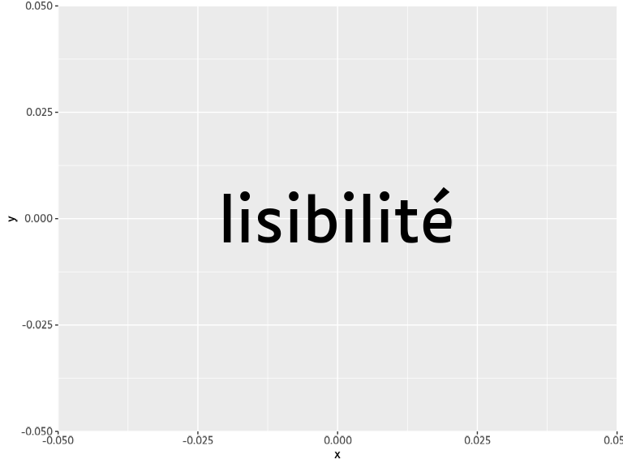

luciole
luciole.Rmdggplot2
Add Luciole font with:
add_luciole(showtext_auto = TRUE)It will add Luciole font family to ‘sysfonts’, and allow its use in graphics through the package showtext.
Then declare the "Luciole" family in your graphics:
library(ggplot2)
ggplot() +
aes(0, 0, label = "lisibilité") +
geom_text(size = 20, family = "Luciole") +
theme_grey(base_family = "Luciole")
R Markdown
In a R Markdown document, you can use Luciole with an HTML output. Use a chunk like below in your Rmd:
```{r attach-luciole, include=FALSE}
attach_luciole()
```Then all text will be rendered using Luciole (like this document). Here’s some examples character:
tag_example(style = "font-size: 2rem;")abcdefghijklmnopqrstuvwxyz
abcdefghijklmnopqrstuvwxyz
abcdefghijklmnopqrstuvwxyz
ABCDEFGHIJKLMNOPQRSTUVWXYZ
ABCDEFGHIJKLMNOPQRSTUVWXYZ
ABCDEFGHIJKLMNOPQRSTUVWXYZ
0123456789$€£¥
0123456789$€£¥
0123456789$€£¥
?,;.:/!()[]{}@&
?,;.:/!()[]{}@&
?,;.:/!()[]{}@&
÷×−+∏∫∞
÷×−+∏∫∞
÷×−+∏∫∞
Shiny
Load Luciole CSS & font files into your page with:
By default a style tag is injected in the head of the page to use Luciole in all the HTML body.
Example:
library(shiny)
ui <- fluidPage(
luciole_font_dependency(),
tags$h2("Hello, I'm using Luciole font to improve lisibility.")
)
server <- function(input, output, session) {
}
shinyApp(ui, server)